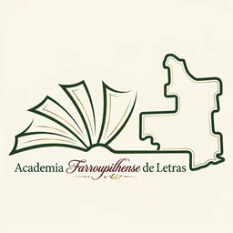

Registro da Academia
A AFL é registrada no CNPJ como associação cultural civil sem fins lucrativos (CNAE 9493-6/00 — atividades associativas ligadas à cultura e à arte), com sede em Farroupilha/RS.

A AcademiaAssociação cultural civil sem fins lucrativos, registrada em 11 de outubro de 2023 — reconhecida oficialmente pela Academia Rio-Grandense de Letras.
Datas e acontecimentos confirmados em fontes públicas — do registro no CNPJ à 35ª Feira do Livro.
A AFL é registrada no CNPJ como associação cultural civil sem fins lucrativos (CNAE 9493-6/00 — atividades associativas ligadas à cultura e à arte), com sede em Farroupilha/RS.
A presidente Ivone Vendrúsculo usa a Tribuna Popular da Câmara para convidar escritores da cidade. Vereadores apresentam projetos municipais de apoio à literatura e oferecem espaços públicos para ações da Academia.
No Auditório do Colégio Estadual Farroupilha, às 19h30 e aberto ao público, o vice-presidente da Academia Rio-Grandense de Letras (ARL), poeta e jornalista Rossyr Berny, dá posse à presidente Ivone Foletto Vendrúsculo. O diretor da escola, professor Vandré Pardin, e a presidente dão posse aos 16 acadêmicos fundadores, que leem seus juramentos. O lema lido na cerimônia é a frase da acadêmica Tânia Perotti Bertol.
A AFL consta no índice oficial das academias do RS em arl.org.br.
A Universidade de Caxias do Sul, campus Farroupilha, cede uma sala à AFL — convite do diretor professor Giancarlo Dal Bó. O espaço é usado para reuniões, lançamento de livros e palestras.
Rifa a R$ 10 o número: 1º prêmio, quadro a óleo pintado pela presidente; 2º e 3º, kit de livros autorais dos membros fundadores. Sorteio online no Instagram em 18/04/2025.
A AFL ocupa espaço próprio na Feira do Livro de Farroupilha com a oficina “Escrita e marca-páginas”, das acadêmicas Júlia de Rossi e Andrei Rodrigues.
De 10 a 15 de novembro, na Praça da Emancipação, a AFL está presente com o bate-papo “Uma Obra, uma História” (sábado, 10h) e a acadêmica Júlia de Rossi com “A Menina, a Mulher e a Literatura” (sexta, 9h).
O propósito da Academia, em palavras de suas fontes:
“A união dessas instituições permite a realização de eventos, debates, palestras e atividades voltadas ao estímulo à escrita, à reflexão sobre a literatura e ao fortalecimento da produção acadêmica e artística.”
Instituições que sustentam a AFL — todas confirmadas em fontes públicas.
Reconhecimento oficial da AFL e índice das academias do RS. O vice-presidente Rossyr Berny deu posse à presidente no ato de fundação.
Cede a sede da AFL desde fevereiro de 2025 (diretor: prof. Giancarlo Dal Bó) para reuniões, lançamentos e palestras.
Tribuna Popular para convite de escritores (2024), Certificado Destaque Cultural à presidente e projetos municipais de apoio à literatura.
Organização anual do evento em que a AFL mantém presença desde a 33ª edição (2024).
Indicação conjunta na comissão que concedeu o Certificado Destaque Cultural (Literatura) à presidente em 2024.
Canal de indicação e articulação entre as academias do estado, com Rossyr Berny como elo com a AFL.
Condições divulgadas publicamente pela Academia. O fluxo final de ingresso está em validação com a AFL.
Dúvidas sobre a Academia, parcerias ou ingresso no quadro de membros — fale com a presidente.